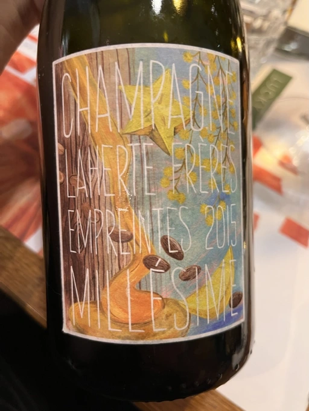

Wine geeks club: Pinot Noir

Wines of the photo:
- Laherte Fréres Empreintes 2015 (present from Anna and Vitalii)
- Bencze Atlas 2019
- Andre et Mireille Tissot Pinot Noir Sous la Tour 2017 (spoiled)
- Pierre Andrey PN19dj36 Série 7 (sept) 2019
- Domaine de Saint Pierre Saint-Pierre 2020
- Gérard Raphet Gevrey-Chambertin 2008
- Pyramid Valley Earth Smoke Pinot Noir 2011
- Mythopia π no 2017 (spoiled)
- Jean Grivot Échezeaux Grand Cru 2008 (spoiled, obviously)
- Matassa french disko cinsault 2021
Champagne, Matassa and spoiled wines do not participate in the rating.
Scores
| Atlas | PN19dj36 | Saint-Pierre | Gevrey-Chambertin | Earth Smoke | |
|---|---|---|---|---|---|
| Anna | 4.00 | 4.10 | 4.20 | 4.30 | 4.00 |
| Vitalii | 4.10 | 4.10 | 4.20 | 4.30 | 4.00 |
| Julia | 3.30 | 4.00 | 3.70 | 4.10 | 3.90 |
| Vlad | 3.20 | 3.90 | 3.70 | 4.00 | 3.60 |
| Daria | 3.70 | 3.70 | 3.90 | 4.00 | 3.80 |
| Iryna | 3.70 | 4.00 | 4.20 | 4.00 | 3.80 |
| Kostiantyn | 3.80 | 4.00 | 4.20 | 4.30 | 3.90 |
| Vasyl | 3.50 | 4.00 | 4.10 | 4.20 | 3.90 |
| Boris | 3.60 | 4.00 | 4.20 | 4.00 | 4.00 |
| amean | sdev | price | QPR | |
|---|---|---|---|---|
| Atlas | 3.66 | 0.0780 | 900.00 | 1.6089 |
| PN19dj36 | 3.98 | 0.0128 | 2000.00 | 1.1606 |
| Saint-Pierre | 4.04 | 0.0425 | 1800.00 | 1.4260 |
| Gevrey-Chambertin | 4.13 | 0.0178 | 2700.00 | 1.0887 |
| Earth Smoke | 3.88 | 0.0151 | 1800.00 | 1.1110 |
How to read this table:
ameanis arithmetic mean (and not ‘amen’), calculated as sum of all scores divided by count of scores for particular wine. It is more useful thantotal, because on some events some wines are not tasted by all participants.sdevis standard deviation. The bigger this value the more controversial the wine is, meaning that people have different opinions on this one.priceis wine price in UAH.QPRis quality price ratio, calculated in as100 * factorial(rms)/price. The reason behind this totally unprofessional formula is simple. At some point you have to pay more and more to get a little fraction of satisfaction. Factorial used in this formula rewards scores close to the upper bound 120 times more than scores close to the lower bound.
Laherte Fréres Empreintes 2015

- producer: Laherte Fréres
- name: Empreintes
- vintage: 2015
- grapes: Pinot Noir, Chardonnay
- appellation: Champagne AOC
- location: Champagne, France
- alcohol: 12.5
- sugar: N/A
Bencze Atlas 2019
- producer: Bencze
- name: Atlas
- vintage: 2019
- grapes: Pinot Noir
- appellation: Balatonfelvidék OFJ
- location: Hungary
- alcohol: 12.5
- sugar: N/A
- price: 900 UAH
Andre et Mireille Tissot Pinot Noir Sous la Tour 2017
- producer: Andre et Mireille Tissot
- name: Pinot Noir Sous la Tour
- vintage: 2017
- grapes: Pinot Noir
- appellation: Arbois AOC
- location: Jura, France
- alcohol: 12.5
- sugar: N/A
- price: 2000 UAH
Pierre Andrey PN19dj36 Série 7 (sept) 2019

- producer: Pierre Andrey
- name: PN19dj36 Série 7 (sept)
- vintage: 2019
- grapes: Pinot Noir
- appellation: Vin de Table
- location: France
- alcohol: 12.5
- sugar: 3
- price: 2000 UAH
Domaine de Saint Pierre Saint-Pierre 2020
@512.webp)
- producer: Domaine de Saint Pierre
- name: Saint-Pierre
- vintage: 2020
- grapes: Pinot Noir
- appellation: Arbois AOC
- location: Jura, France
- alcohol: 12.9
- sugar: 2
- price: 1800 UAH
Gérard Raphet Gevrey-Chambertin 2008

- producer: Gérard Raphet
- name: Gevrey-Chambertin
- vintage: 2008
- grapes: Pinot Noir
- appellation: Gevrey-Chambertin AOC
- location: Burgundy, France
- alcohol: 13.5
- sugar: N/A
- price: 2700 UAH
Pyramid Valley Earth Smoke Pinot Noir 2011
- producer: Pyramid Valley
- name: Earth Smoke Pinot Noir
- vintage: 2011
- grapes: Pinot Noir
- region: North Canterbury
- location: Canterbury, New Zealand
- alcohol: 14
- sugar: N/A
- price: 1800 UAH
Mythopia π-no 2017

- producer: Mythopia
- name: π-no
- vintage: 2017
- grapes: Pinot Noir
- region: Valais
- location: Switzerland
- alcohol: 12
- sugar: 1.7
- price: 2200 UAH
Jean Grivot Échezeaux Grand Cru 2008

- producer: Jean Grivot
- name: Échezeaux Grand Cru
- vintage: 2008
- grapes: Pinot Noir
- appellation: Échezeaux AOC
- location: Burgundy, France
- alcohol: 13
- sugar: 2
Matassa french disko cinsault 2021
- producer: Matassa
- name: french disko cinsault
- vintage: 2021
- grapes: Cinsault
- appellation: Vin de Table
- location: France
- alcohol: 11
- sugar: 0.4
- price: 1500 UAH